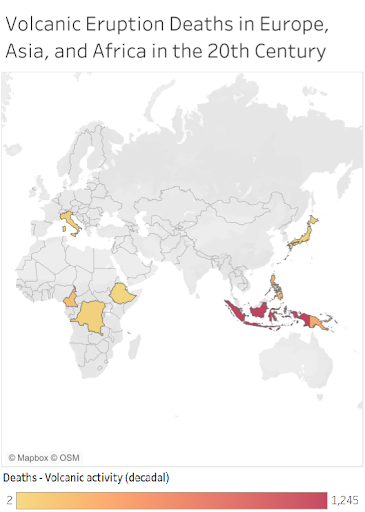
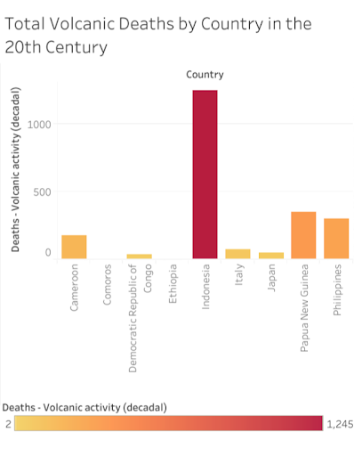
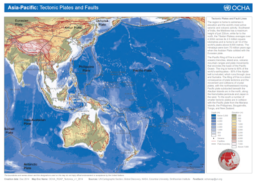
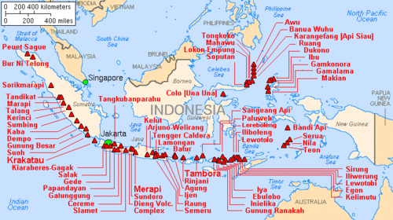

Data Compiled by James McCann
Written by Ari White and Chase Quinn
Edited by Sam Ocon
On August 24th, 79 A.D, the volcano Mount Vesuvius erupted over the island of Pompeii, killing thousands and preserving their bodies for centuries to come. In modern times this disaster is remembered as an ancient tragedy, but what about volcanic disasters today? Across the globe there are over a thousand active volcanoes, some which exist in close proximity to human settlements. In many countries volcano disasters still claim lives. Looking at the location of these sites and the science behind them give us a glimpse into the world of volcanoes today.
Looking at a map of global volcano deaths in the 20th century, we can see the areas where volcano casualties occur. Overall, deaths from volcanoes are relatively uncommon. A vast majority of people do not live near volcanoes, let alone active ones in close enough proximity to be dangerous. While there are some data points in Africa and Italy, the majority of volcanic activity deaths occur in island nations. Geography explains why this is.
By definition, a volcano is an opening within the Earth where steam and molten rock vent from deep underground to the surface. When rock melts it becomes magma, which due to density naturally flows upward from the solid rock that surrounds it. When enough magma or gas builds in an underground chamber, it rapidly forces itself up out of the volcano’s entrance in what we commonly know as an eruption. Over 80% of volcanic activity takes place beneath the sea, and when magma enters the ocean it begins to rapidly cool and rise to the surface. When this fully cools, it becomes solid rock which over time can form islands. As tectonic plates move, the volcano continues to release molten rock from the ground, forming chains and lines of islands in close proximity.
It's no coincidence then that Indonesia, a country made of over 17,000 islands, has the most deaths from volcanic activity. With about 130 active volcanoes the island nation is situated in what is known as the “Ring of Fire”. This is a string of hundreds of volcanoes that make up over two thirds of the world's total. The Ring of Fire stretches across the Pacific Ocean along boundaries where several different tectonic plates meet, forming volcanoes. The western boundary of this area encompasses nearly the entirety of Indonesia, as well as other islands like Papua New Guinea and The Philippines. This zone also has a very high frequency of tectonic activity. Some of the largest earthquakes in the world have been observed in this area.
It must be remarked, however, that Papua New Guinea, the Philippines, and Japan are all also situated on the Ring of Fire, and the data does demonstrate that these nations all suffered some level of volcanic damage. However, they seem to have been insulated from the level of devastation that hit Indonesia. Why might that be? We can posit a few things. Firstly, Indonesia had a higher population than any of the other nations, and its population was and continues to be densely concentrated. Secondly, the volcanoes are not evenly distributed across these countries, nor are their eruptions. Papua New Guinea and the Philippines, in particular, are somewhat insulated in that their volcanoes are mostly offshore. Indonesia, however, has the vast majority of its volcanoes on the Greater Sunda Islands, which is also where the majority of its population is concentrated.
Lastly, Indonesia’s volcanoes are almost exclusively located on fault lines and the edges of tectonic plates. Many of the volcanoes in Papua New Guinea, Japan, and the Philippines are the result of mantle plumes, volcanic hotspots that appear to move as tectonic plates shift, causing the volcanoes formed by them to quiet and eventually grow dormant. Many of their other volcanoes were indeed formed by fault lines, but those lines have shifted. Indonesia’s volcanoes, however, remain situated firmly atop a long fault line, one that remains incredibly active. Indonesia sits on a complex intersection of four tectonic plates, resulting in one of the most seismically active crossroads on Earth.
Mount Vesuvius is the volcano we all know, but perhaps we should also know Mount Tambora in Indonesia. Its eruption is the largest that we know of. When it erupted in 1815, it shot up so much ash, dust, and smoke into the atmosphere that it affected the global climate. The huge cloud of volcanic ejecta reached Europe in 1816, where it brought about a Year Without Summer. The global temperature dropped by an entire degree Fahrenheit. Vesuvius may be the most famous volcano, but Tambora is the one with the highest kill count. Both volcanoes remain active, and are surrounded by dense population centers. But if current trends continue, it’s Tambora we’ll be hearing about next.